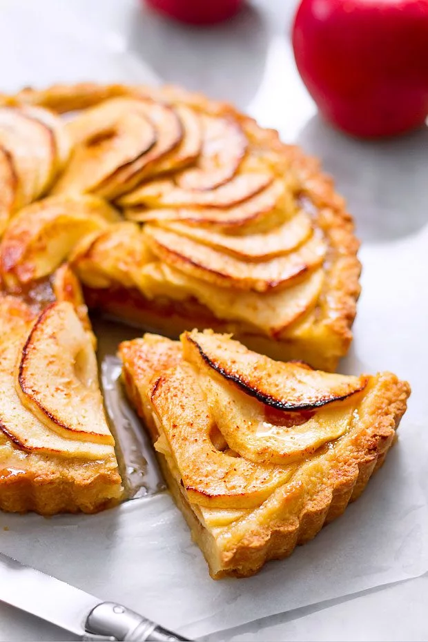

Nostalgia is a bittersweet feeling that is tied to the memories of the past. It brings back warm feelings of comfort, joy, and longing for moments that can’t be relived but are very much cherished. Nostalgia is often associated with family traditions, childhood memories, and familiar places. It creates a deep connection to simpler and earlier times.
Apple pie is often linked to personal stories. It can be a grandmother’s recipe, a favorite childhood dessert, or an old family tradition. Nostalgia connects to this idea of returning to those fond memories and revisiting a past that is gone but still holds an abundance of emotional power. Every slice of apple pie can feel like a doorway to the joyful past.
The act of baking the pie, with the smells of cinnamon and apples filling the air, also has a way of bringing back vivid memories. These smells can transport you back to a kitchen filled with family members, creating a sensory bridge to the past, much like how nostalgia works in the mind. The warmth of the pie as it comes out of the oven mirrors the warmth of those memories, inviting you to linger and savor the moment.
Apple pie in many cultures represents more than just a sweet dessert. It’s a symbol of home, family gatherings, and cherished memories from the past.
Apple pies are often tied to family recipes that have been passed down through generations. Each family has their own little tweak to the pies that makes it their own. They are commonly taken out and made during holidays or special occasions. The act of baking an apple pie can evoke memories of childhood kitchens, gatherings on holidays like Thanksgiving, or the smell of spices filling the home with grandparents. The smell of baking apples, cinnamon, and butter is very comforting. It can recall moments of warmth shared around a table with our dearly loved ones. Nostalgia often makes us go into a journey longing for a time when things felt simpler and more secure. When everything feels just a lot better. A slice of apple pie offers that same feeling of coziness and comfort.
The golden-brown crust of the apple pie symbolizes the warmth of home, comfort, and familiarity. It evokes a sense of being grounded, the feeling of at home and safe. There is a connection to tradition like the sepia tones of old photographs that brings back memories.
The baked apples, cinnamon, and caramelized sugar in apple pie brings a rich and deep caramel shade into the color palette. These tones reflect warmth and evoke a feeling of old-fashioned coziness. A very cottage feeling.
The apples themselves, often shades of red or green, offer a nod to nature and freshness. This also connects to childhood memories of autumn orchards. These are not bright or saturated. They are rather soft and are nostalgic shades of red and green that recall the past.
